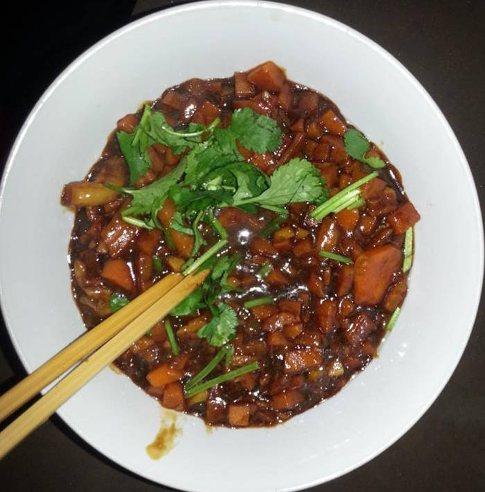

奶油鲍鱼菇
材料： 鮑魚菇300公克、洋地瓜200公克、樹子50公克、薑末10公克、香菜10公克、麵粉30公克。調味料：
醬油2大匙、蘋果淳1大匙、香油1大匙、糖1/2小匙、黑胡椒粒1/2小匙。
作法：
鮑魚菇切花刀、洋地瓜切成末、香菜切末，備用。 鮑魚菇沾上麵粉放入鍋中煎至上色，備用。 鍋中放入1大匙葡萄籽油，爆香洋地瓜、樹子、薑末放入鮑魚菇、調味料燒至入味，灑上香菜即可盛盤。
- 我误用红薯代替了洋地瓜.洋地瓜又名豆薯,见Wiki.
- 菇应该煎得焦一点
- 红薯本身甜的，加苹果醋和糖后就过甜了.而洋地瓜则是淡的,可能口感上也好一点
- 生姜尽可能切碎
- 面粉应该一开始放在干燥的碗里,面粉本身不结块,用生粉代替不好
- 黑胡椒粒还是需要的
- 香菜保持干燥包好隔绝空气放到冰箱保存
- 树子是台湾特产,在悉尼可能只能买罐头了，见这道菜谱.
- 酱油好像放了多一点
- 不过再视频里一大勺实际上是满满两勺
